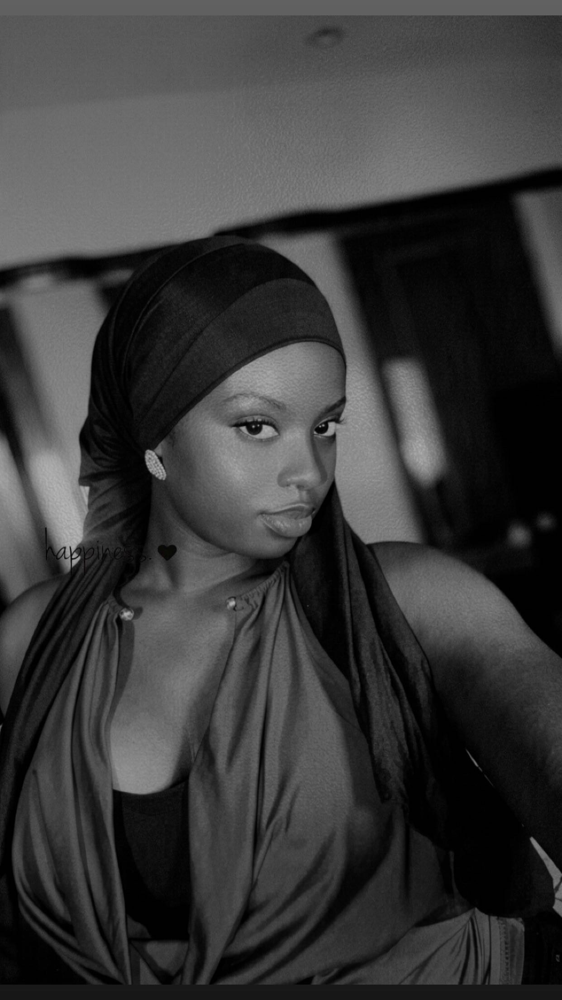
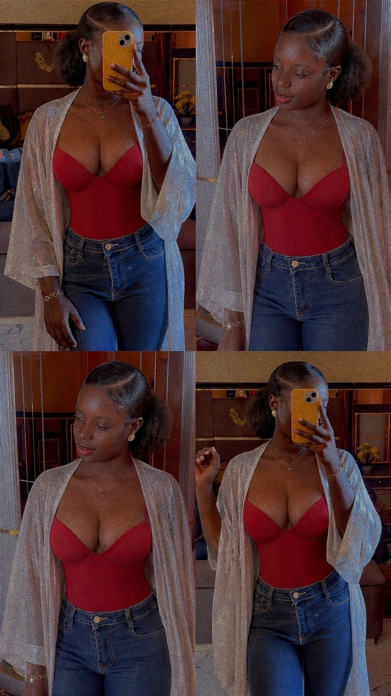
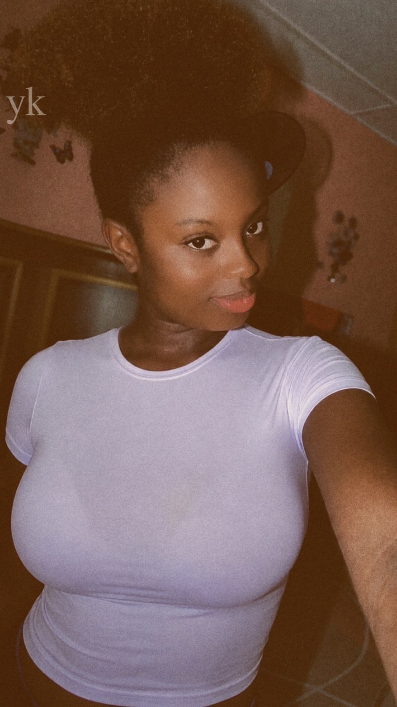

Baccalauréat obtenu
Des années de travail récompensées : le bac est validé, et une nouvelle étape commence.
Bachelière · Promotion 2026
Étudiante. Le bac en poche, direction l'Université Gaston Berger de Saint-Louis.
Voir mon parcours
Des années de travail récompensées : le bac est validé, et une nouvelle étape commence.
Affectée à l'Université Gaston Berger de Saint-Louis, pour démarrer ma vie d'étudiante.
Apprendre, rencontrer, grandir. Tout reste à écrire.

